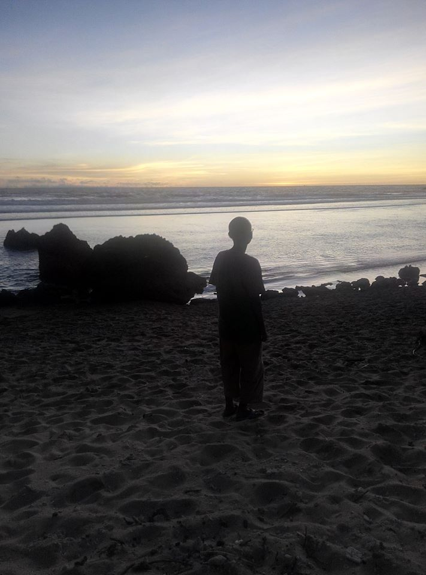

|

|
BIODATA
| NAMA |
: Aditya Pratama |
| NIS |
: 186408857 |
| TTL |
: Jakarta, 21 Februari 2003 |
| ALAMAT |
: Jalan Meranti II, Perumahan Papan Indah, RT 006/024, Mangunjaya, Tambun, Bekasi |
| JENIS KELAMIN |
: Laki - Laki |
| AGAMA |
: Islam |
| Hobi |
: Saya suka menonton YouTube, menonton kartun, dan membaca buku/artikel tentang sejarah. |